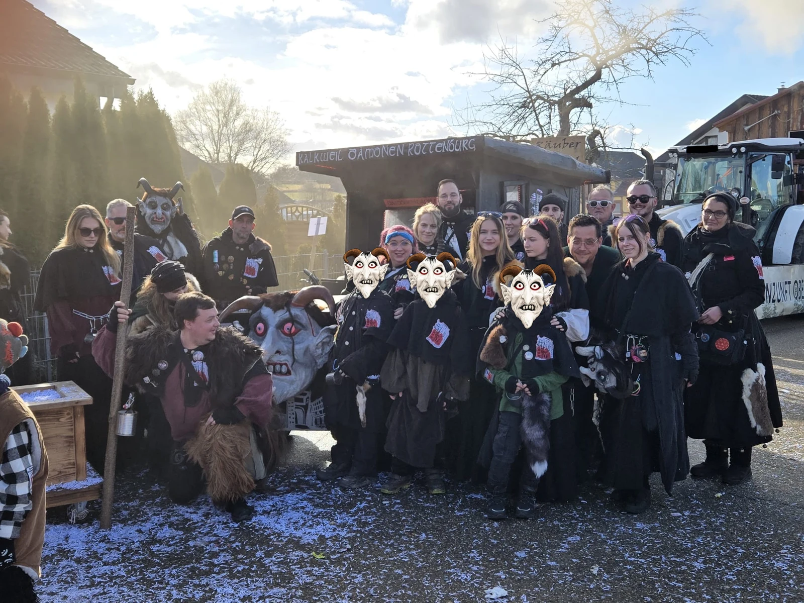

WER WIR SIND
Gemeinsam für die Fasnet
Wir sind die Kalkweil Dämonen aus Rottenburg am Neckar. Seit 2015 verbindet uns die Leidenschaft für die Fasnet, das gemeinsame Erleben von Tradition und die Freude am Vereinsleben.
Unser Kalkweilertor ist Teil unseres Vereinslogos und verbindet unseren Auftritt mit unserer Heimatstadt.
Lerne uns kennen →